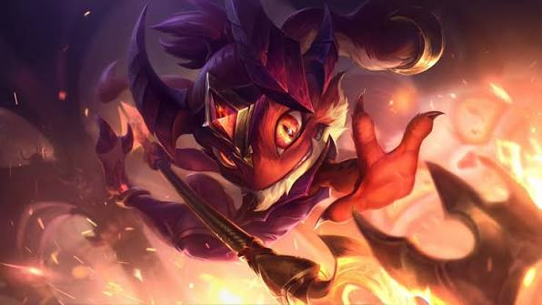
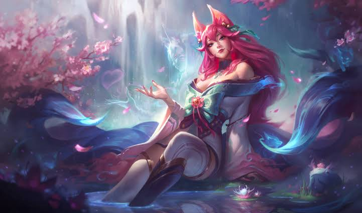

📰
Jornal Científico
Já participei de um jornal escolar científico, encarando de perto a rotina de apurar, escrever e divulgar conteúdo.
CURIOSIDADES :: v2.0
5 fatos aleatórios sobre mim que não cabiam no currículo
Já participei de um jornal escolar científico, encarando de perto a rotina de apurar, escrever e divulgar conteúdo.
Apaixonado por vôlei — de assistir a jogar sempre que dá.
Rock correndo nas veias, com destaque para Guns N' Roses e Falling in Reverse na playlist.
Toco contrabaixo e sou fã de Queen — em boa parte por causa do baixista John Deacon.
No League of Legends, três campeões dominam minhas partidas — todos com foco em mobilidade e cima do timing certo para entrar na luta:
 Diana
Diana

Fizz
AhriSe fosse montar minha playlist oficial, ela teria: